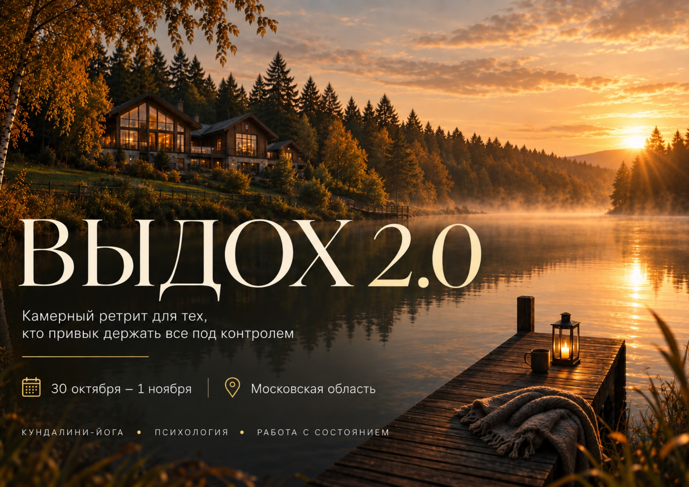
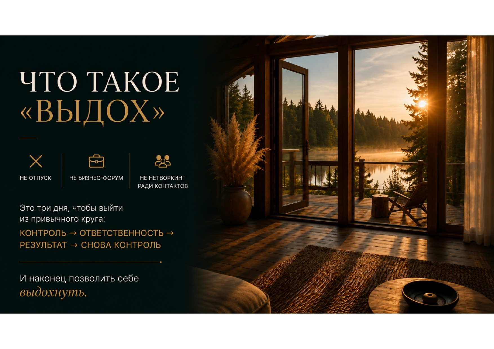
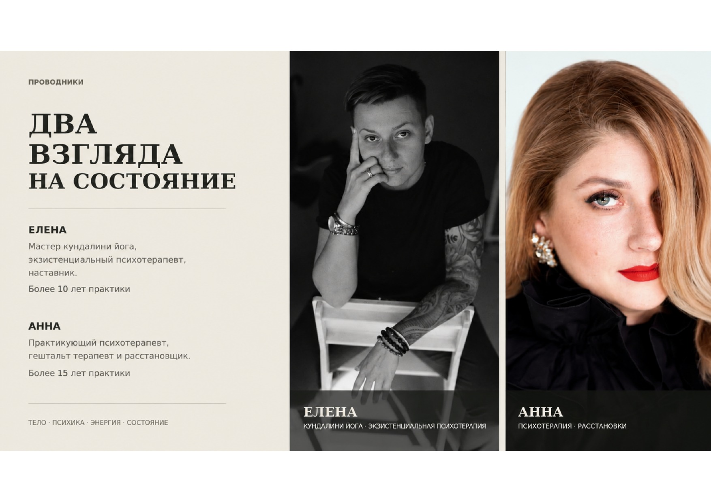
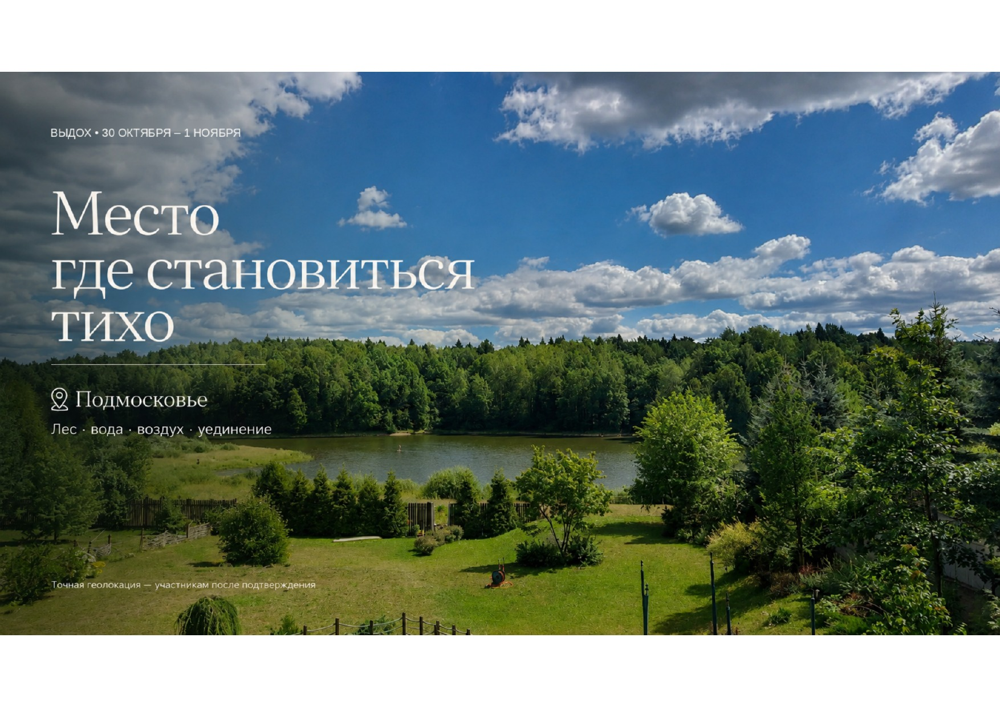
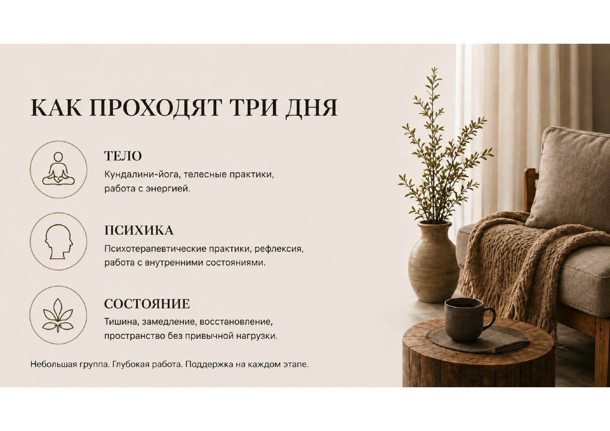
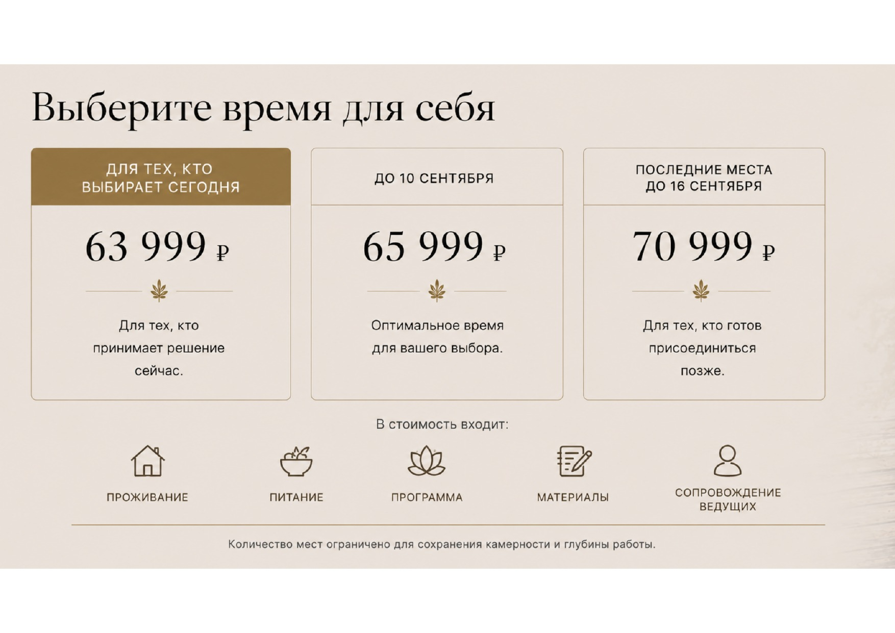
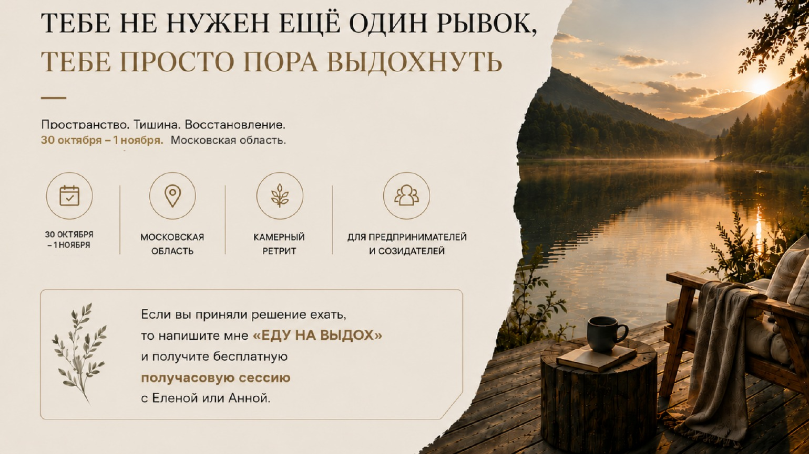

К содержанию

Кундалини-йога, психология и работа с состоянием.

Контроль, ответственность, результат — и снова контроль. Наконец можно позволить себе выдохнуть.

Елена — мастер кундалини-йоги и экзистенциальный психотерапевт. Анна — практикующий психотерапевт и гештальт-терапевт.

Тихая эколокация с уединением.

Кундалини-йога, телесные и психотерапевтические практики, рефлексия, работа с внутренними состояниями, тишина и восстановление.

В стоимость входят проживание, питание, программа, материалы и сопровождение ведущих.

Ретрит для предпринимателей и создателей. 30 октября — 1 ноября, Московская область.